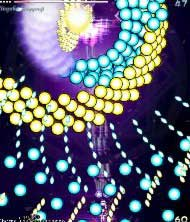
ちょい大きめの丸弾と粒上の弾による攻撃。
水色の丸弾にカスリながら避けなきゃいけないので覚悟しよう。
粒弾と粒弾の隙間を入らないと避けれない場合はボムで回避。
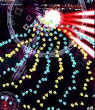
レーザーとくさび弾による攻撃。
くさび弾は自機の位置によって軌道が変わるので弾が出たら弾の方向に向かえば
弾が真下に進むので避けるのが楽。
とは言え、やはり避けるのが難しいのでボム発動が無難か。
亡郷「亡我郷 -さまよえる魂-」が終わってからボス幽々子が扇を開きます。
この扇にショットを当てても幽々子はダメージを若干くらうので本体に当てづらい時は扇に撃ちましょう。
（当然ながら扇より本体に当てた方がよりダメージをくらいますが。）
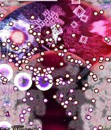
この攻撃は大きい黒弾が自機を狙った弾道なので画面端から反対の端まで避けながら移動しよう。
黒弾に追い詰められそうになったら思い切って高速移動で自分の進む方向の逆の方向に切りかえしてみよう。
それが無理そうならボム。
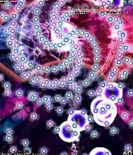
らせん状の弾と自機狙いの大きい黒弾による攻撃。
さっきと同じく、黒弾に追い詰められないように切り返しが重要。
この時はボム耐性があるのでボムを使ってもあまりゲージを削れない。
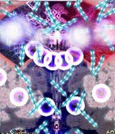
四本のナイフが何セットも飛び交い、大きい黒弾もくる攻撃。
最初の内はナイフの軌道がまっすぐなので問題ないが黒弾の登場と共に
軌道が斜めになったりするので避けづらい。これも苦手ならボムを使おう。
亡舞「生者必滅の理 -眩惑-」が終わってからこの攻撃に移るときに
幽々子が点アイテムを吐き出すが、アイテム吐き出しからこのナイフ攻撃に移るまでの感覚が短いので
点アイテムを取ってからだと安全な位置を確保しずらく被弾しやすい。
そのため初心者のうちは欲張らずにアイテムを見逃すこと。引きの美学です。
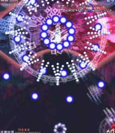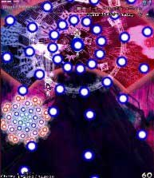
青い固定弾と幽霊の如く自機を追いかけてくる弾の攻撃。
一番最初のみ左の画像の様に白弾も撃たれるので注意。
追尾弾は、見てから避けても十分間に合うので落ち着いて。
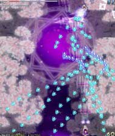
くさび弾を次々に撃っていく攻撃。青弾のみ自機狙い。
青弾以外は動かなければ絶対当たらないので青弾が来た時だけチョン避けして後は不動でOK
一応この攻撃の時は扇を仕舞うので本体に撃ち込もう。
幽々子の攻撃の中では一番簡単な攻撃なのでノーミスノーボムで抜けたい。
次の「リポジトリ・オブ・ヒロカワ」に備えてノーマルショットで撃ち込んで桜点を稼げれば尚更良い。
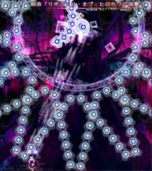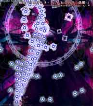
固定弾を撃った後、自機狙い弾を四回撃つ攻撃。
まず左の画像のように端よりチョイ内側で固定弾を避け十字キーを一回ずつ押しながら
慎重に四回自機狙い弾を避けよう。
そうしたら反対側の端よりチョイ内側へ高速移動で急いで移動して同じように避ける。
見た目は難しそうだけど、実際は自機狙い弾と固定弾の2つの要素でしか構成されていないので
自機の動きをパターン化すれば楽勝。
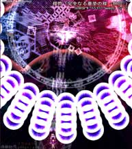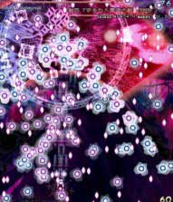
まず黒弾を放ち、その後分裂する弾、粒状の弾を放つ攻撃。
分裂弾の幾つかはさりげなく自機を狙ってきてエロいので注意。
この攻撃時のボスはボム耐性があまり無いのでボムを使うのも有効。
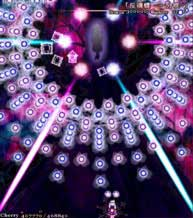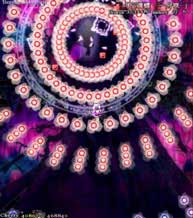
直線状の青弾とレーザーの後、赤弾が出てきて左下、右下、左下、右下の順に三つに分裂する攻撃。
60秒間弾を避けつづけるだけなのでショットは撃たなくてOK。
赤弾の避け方は上方（幽々子の周りの白い円あたり）で分裂する前に避けるか、一番下で落ち着いて分裂弾を避けるかの二択。
ここまで来たならボムとか森羅結界をバンバン撃っちゃおう。
[目次へ戻る]